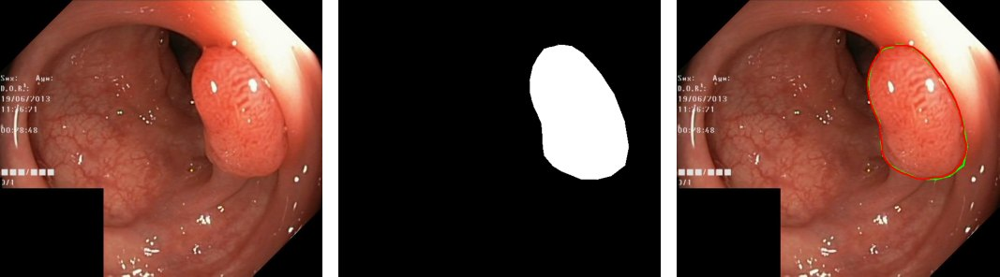

Polyp Segmentation in Colonoscopy Images
A U-Net with an ImageNet-pretrained ResNet34 encoder on Kvasir-SEG, trained with a combined BCE and Dice loss, reaches a mean Dice of 0.910 and a mean IoU of 0.855 on a held-out test set evaluated at original resolution, with a failure analysis on pedunculated and flat polyps.
